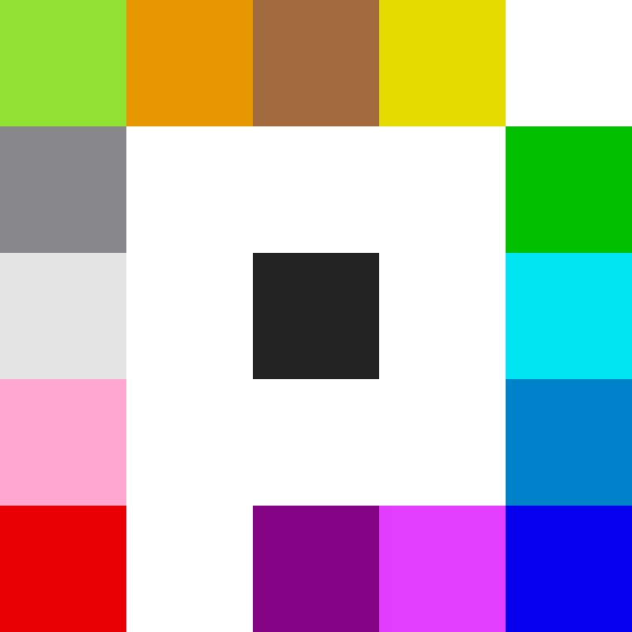
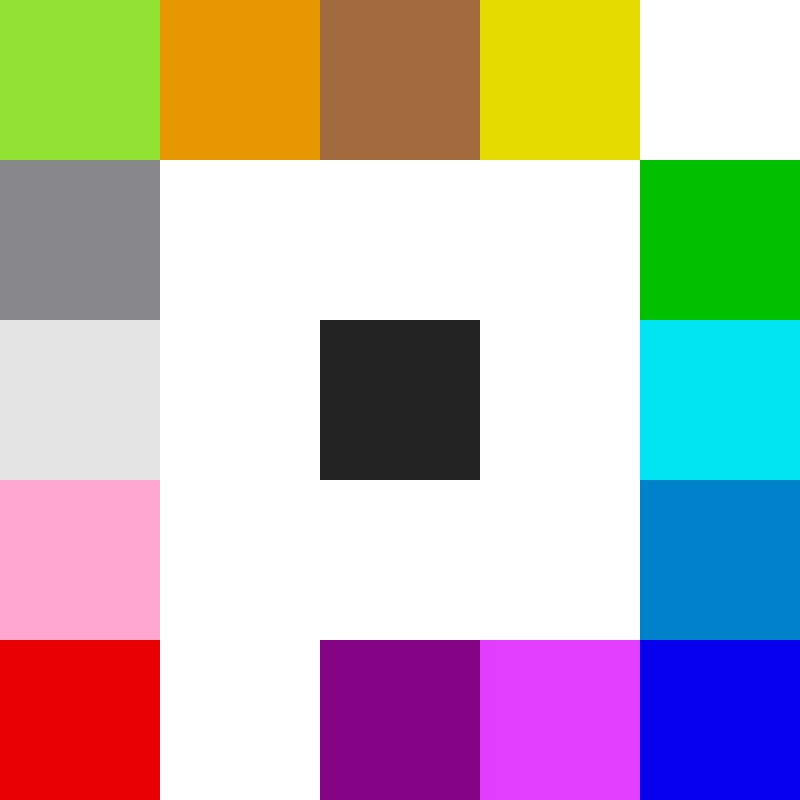

Introduction
r/place is a recurring collaborative project and social experiment hosted on the content aggregator site Reddit.
Originally launched on April Fools' Day 2017, it has since been repeated again on April Fools' Day 2022 and on July 20, 2023.
The 2017 experiment involved an online canvas located at a subreddit called r/place. Registered users could edit the canvas by changing the color of a single pixel with a replacement from a 16-color palette.
After each pixel was placed, a timer prevented the user from placing any more pixels for a period of time varying from 5 minutes (depending on whether the user had verified their email address).
The idea of the experiment was conceived by Josh Wardle. It was ended by Reddit administrators about 72 hours after its creation, on 3 April 2017. Over a million users edited the canvas, placing a total of approximately 16 million pixels, and, at the time the experiment was ended, over 90,000 users were actively viewing or editing the canvas.
The experiment was commended for its representation of the culture of Reddit's online communities, and of Internet culture as a whole.
Overview
The experiment, during the 2017 edition, was based in a subreddit called r/place, in which individual registered users could place a single colored pixel (or "tile") on an online canvas of one million (1000 x 1000) pixel squares, and wait a certain amount of time before placing another. In 2017, the waiting time varied from 5 to 20 minutes throughout the experiment, and the user could choose their pixel's color from a palette of sixteen colors. The 2022 edition started with the same size and colors as 2017, but the canvas was later expanded to four million (2000 x 2000) pixel squares, and the palette gradually gained sixteen more colors for a total of 32. The 2023 edition also started with the same size as the 2022 and 2017 editions (1000 x 1000), and started with 8 colors. It was later expanded to 2 million (2000 x 1000) pixel squares, with 16 colors, then it expanded to 6 million (3000 x 2000) pixel squares, with 32 colors.
Reddit administrators have the ability to place as many pixels as they want and can use this ability to remove offensive content from r/place. Guidelines have outlined this content as nudity, hate speech, targeted harassment, or otherwise objectionable content. This power was illustrated in 2023 when messages expressing violence towards the CEO of Reddit as well as some sexual imagery was removed.

The Canvas in 2023 on the final day of the event
Media Response
The first experiment was praised for creating a sense of collectivism at a time when the Internet was to a great extent fractured and polarized. The Washington Post compared Place to The Million Dollar Homepage, a 1000-by-1000-pixel website where each pixel was sold for a dollar in 2005. The Conversation observed that, while the experiment demonstrated the ability of cooperation in the Internet to express people's passions, Place also showed the toxicity and exclusion of some communities. The 2022 edition of the experiment caused Reddit's daily active users to reach an all-time peak. Kotaku welcomed the 2022 return of the experiment, saying: "In an era where so much of the modern internet is trash, r/place has returned and it's still really cool."
For the 2023 edition of r/place, The Verge commented that it was done at "perhaps at the worst possible time", as some Reddit users were still "furious" over Reddit's recent decisions to charge fees for its API, to delete its chat history, and to shut down the Reddit Gold system. After the 2023 edition concluded, Polygon stated that it was "different" from the previous editions, because it was "defined by the way some Redditors used the canvas to protest Reddit CEO Steve Huffman".